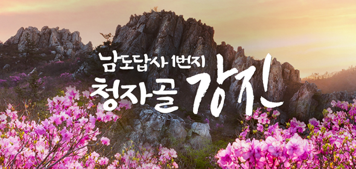
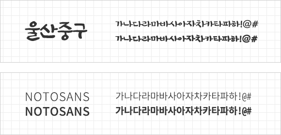

강진문화관광이라는 주제로 디자인하였습니다. 리뉴얼 사이트 구성은 단락별로 관광지-관광안내-권역별 순으로 기존에는 복잡했던 구성을 단순화하여 원하는 정보를 빠르게 찾을 수 있으며, 세로 긴 형태의 스크롤링 방식으로 화면을 내리면서 단락마다 다른 디자인을 통해 지루할 틈이 없도록 작업하였습니다.
안정, 평온, 시원한 느낌을 주며 강진의 푸르름과 맑은 하늘을 연상케 하는 색을 주색으로 선정하였으며, 보조색은 어떤 색과도 잘 어울리는 무채색을 사용하여 주색과 포인트 색의 조화를 이루었고, 자칫 흔한 느낌을 줄 수 있는 주제색에 대조되는 빨간색을 선택해 ‘더불어 행복한 강진’이라는 군정운영방침을 활기차게 표현하였습니다.
강진의 명산인 주작산을 배경으로 철쭉이 만개한 모습을 보고 사람들이 가고 싶다 라는 생각이 들도록 작업해 달라는 클라이언트의 요구를 반영해 연출해보았습니다.

타이틀 서체는 납작한 느낌의 무게감과 안정감이 있는 울산중구 서체를 활용하였고본문 서체는 명시성과 가독성이 좋은 본 고딕을 활용하여 깔끔한 느낌을 주고자 하였습니다.

비쥬얼 영역은 강진 도자기의 우아함을 표현하고자 강진 로고의 곡선을 메인 비쥬얼 부분에 넣었다. 그리고 기존 관광홈페이지에서는 별로 큰 주목을 끌지 않던 관광지나 축제, 먹거리 부분을 눈에 잘 띄는 첫 화면에 구성하여 기존에 미흡 했던 부분을 강조함으로써 이용자들의 호기심을 끌도록 하고, 그와 동시에 배경으로 돌아가는 동영상을 통해 마치 강진을 여행하고 있는 듯한 느낌을 주도록 한다.
사용자들이 쉽게 접할 수 있어야 하는 관광소식과 문화행사는 직관적인 디자인을 통해 원하는정보를 쉽게 확인할 수 있도록 배치하였고, 주요 메뉴들을 아이콘화 하여 한 눈에 볼 수 있도록 사용자 편의성을 고려하여 구성하였다.
권역별 지도를 크게 넣고 각각의 권역의 관광지 일러스트로 인해 특색 있어 보이고 사이트 전체적인 무거움을 최소화시키는 효과를 주며, 주목성이 높은 강렬한 색감을 사용하여 가보고 싶다는 호기심이 들도록 유도한다. 권역을 클릭하면 해당 권역마다 네모박스에 권역별 대표 이미지가 랜덤으로 뜨도록 설정한다.
인스타그램, 페이스북, 유튜브 등 강진여행이라는 키워드가 들어간 게시물을 추출하여 하단 SNS소식에 소통하는 강진을 표현한다. 좌우로 이동하면 sns 소식이 이동될 수 있게 작업.